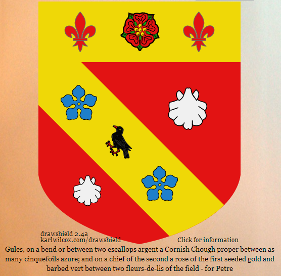

Posted to: The Google+ Heraldry Community
Posted by: Karl Wilcox
Created on: December 7 2012 at 10:27
I'm not a very good heraldic artist, but quite a good programmer - here's some artwork, the shield of Petre, created by my "Drawshield" program (
http://www.karlwilcox.com/drawshield
) . Share your own artwork here!
